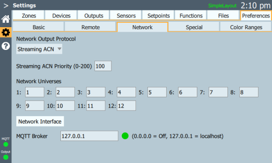

Preferences > Network
Network settings are required if the control signal is being distributed over an Ethernet network to gateway devices.

Network Output Protocol
Select this cell to set either Streaming ACN (sACN) or Art-Net as the protocol Syrcadia will use to output. The cell will display the currently set protocol.
Streaming ACN Priority
Enter an sACN priority level between 0 (lowest) and 200 (highest). Defaults to 100. This field will only appear if Streaming ACN is selected as the network output protocol.
Network Universes
This mapping allows the internal universe assignments to be mapped to other universe numbers within an Ethernet protocol. The default is a one-to-one mapping. Up to 5 universes are available for RAYN Syrcadia on RAYN Touch.
RAYN Syrcadia on PC Base or Unlocked supports up to 2 or 12 universes of DMX respectively.
Network Interface
Use this setting to confirm the Ethernet connection RAYN Syrcadia should use for communication in a networked system.
Note: RAYN Syrcadia on PC may be commissioned as Base or Unlocked. This is the only option available in Settings > Preferences in Syrcadia Base.
MQTT Broker
These settings allow you to configure an MQTT broker for use with Settings > Outputs.
On RAYN Syrcadia for PC, if no broker is installed, selecting Install Broker will pull files from the specified address and start the installation process. Once installed, restart the Syrcadia application.